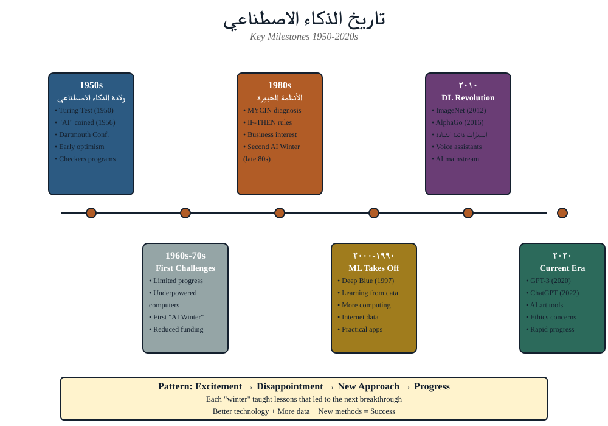
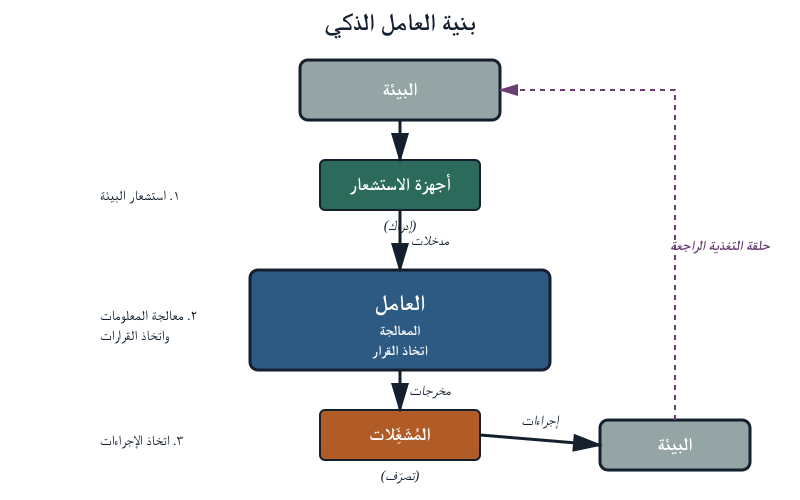
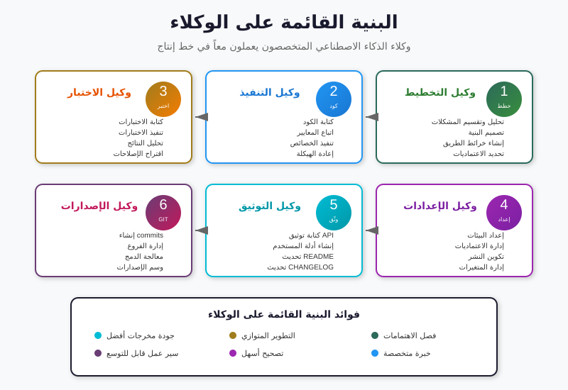
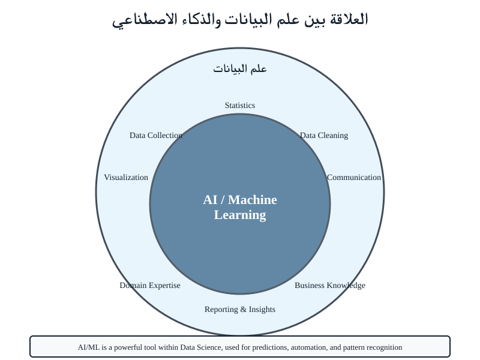

الذكاء الاصطناعي حاضر في يومك بالفعل
لقد استخدمت الذكاء الاصطناعي عدة مرات اليوم وقد لا تكون قد لاحظت ذلك. الاتجاهات التي عرضها هاتفك صباحًا جاءت من خوارزمية بحث تُخطّط أسرع طريق عبر شبكة من الشوارع، آخذةً في الحسبان حركة المرور المباشرة، وإغلاقات الطرق، وعدد الدقائق التي تتأخّر بها السيارة التي أمامك. المساعد الصوتي الذي أطفأ الأنوار البارحة حوّل موجات صوتك إلى نص، استنتج الجهاز الذي تقصده، واستدعى النظام المناسب. الرسائل غير المقروءة التي نقلها صندوق بريدك بهدوء إلى "العروض" صنّفها نموذج قرأ مليارات الرسائل التسويقية. ألبوم "الذكريات" الذي عرضه هاتفك الأسبوع الماضي جمعه نموذجٌ للتعرّف على الوجوه ربط صور الأشخاص أنفسهم، حتى لو كانوا أصغر بخمس سنوات وأقلّ وزنًا بعشرين كيلوغرامًا.
لم يبدُ أيّ من ذلك "ذكاءً اصطناعيًا" حين حدث. وهذه هي النقطة. الذكاء الاصطناعي الأكثر فائدة لا يُعلن عن نفسه؛ يتلاشى في العمل الذي يؤديه. اليوم، إذا كان لديك هاتف ذكيّ واجتماع ميزانية، فأنت مستخدمٌ للذكاء الاصطناعي بالفعل. السؤال الذي تجيب عنه هذه الدورة هو: هل أنت مستخدمٌ واعٍ؟
الخلاصة العملية
حين يقترح أحدهم إضافة الذكاء الاصطناعي إلى عملية ما، نادرًا ما يكون السؤال الأول المناسب «هل هذا ذكاء اصطناعي؟» — الإجابة دائمًا "نعم" تقريبًا. السؤال المناسب هو «أيّ نوع من الذكاء الاصطناعي، وهل هو المناسب لهذه المهمة؟». محتوى اليوم يمنحك التصنيفات اللازمة لطرح ذلك السؤال بذكاء.
المنظورات الأربعة على الذكاء الاصطناعي
يُنظّم كتاب ستيوارت راسل وبيتر نورفيغ — الذكاء الاصطناعي: مقاربة حديثة — المجال كله حول مصفوفة 2×2. أنظمة الذكاء الاصطناعي تحاول فعل واحد من أربعة:

التصرّف بشريًا — اختبار تورنغ
هل تستطيع الآلة خداع شخص لِيظنّ أنه يحادث شخصًا آخر؟ هذا هو السؤال الأصلي. ChatGPT وClaude يعيشان هنا حين يُجريان محادثةً تشعر فيها أنك تتحدّث إلى زميل. لاحظ أن الهدف ليس أن يكون النظام صحيحًا، بل ألّا يتميّز عن الإنسان.
التفكير بشريًا — النمذجة المعرفية
هل نستطيع بناء آلة تشبه عمليتها الداخلية عملية التفكير عند البشر؟ هذا مجال علم الإدراك. أقلّ شيوعًا في الصناعة لكنه يشكّل أساس كثير من أبحاث التفاعل بين الإنسان والحاسوب.
التفكير عقلانيًا — المنطق والبراهين
الاستدلال من المقدّمات إلى نتائج صحيحة، كما يفعل محامٍ متمرّس أو رياضيّ. هذه أرض "الأنظمة الخبيرة" والأنظمة المعرفية التي سنلتقيها في اليوم 4. صارمة وقابلة للتفسير، لكنها هشّة حين تنكسر القواعد أمام الواقع.
التصرّف عقلانيًا — الوكيل العقلاني
مهما كانت العملية الداخلية، يتصرّف النظام بطريقة تعظّم احتمال تحقيق أهدافه. هذا هو المنظور المهيمن في الذكاء الاصطناعي الحديث. السيارة ذاتية القيادة لا تحتاج إلى التفكير كسائق بشري؛ تحتاج إلى القيادة الجيّدة. وهذه العدسة هي التي سنستخدمها أكثر.
لماذا تهمّك هذه المصفوفة
حين يعرض بائع "ذكاءً اصطناعيًا"، اسأل: في أي ربع؟ المحادثة الآلية التي تحاول أن تشعر بشريّةً (التصرّف بشريًا) شيء مختلف جدًا عن نظام كشف احتيال يحاول تعظيم الإيجابيات الصحيحة (التصرّف عقلانيًا) — وكلٌّ منهما يفشل بطريقة مختلفة.
الحقب الست لتاريخ الذكاء الاصطناعي
الذكاء الاصطناعي أقدم مما يظنّ كثيرون، وقد أُعلن موته مرّتين على الأقل. معرفة الدورة مفيدة: تعلّمك أيّ أنواع التقدّم بقيت، وأيّها كانت ضجيجًا، وما الذي ينبغي مراقبته في الموجة الراهنة.

الخمسينيات — بدء الحلم
ألن تورنغ يسأل "هل تستطيع الآلات التفكير؟" عام 1950. مؤتمر دارتموث 1956 يُسمّي المجال "الذكاء الاصطناعي". برامج مبكّرة تلعب الدامة، وتحلّ ألغازًا منطقية، وتُبرهن على نظريات هندسية. التفاؤل هائل: ورقة عام 1965 تتنبّأ بأن الآلات ستؤدي أيّ عمل بشريّ خلال عشرين سنة.
السبعينيات — الشتاء الأول
الوعود الكبرى لا تتحقّق. التمويل يتبخّر. يتعلّم الباحثون بطريقة قاسية أن ما يبدو سهلًا للطفل (التعرّف على وجه) أصعب بكثير ممّا يبدو صعبًا للراشد (إثبات نظرية). تُعرف هذه بـ مفارقة مورافِك، ولا يزال أثرها قائمًا.
الثمانينيات — الأنظمة الخبيرة
عودة عملية. تبني الشركات "أنظمة خبيرة" تُكوِّن قواعد الخبراء — التشخيص الطبي، استكشاف النفط، تكوين المعدّات. هذه أسلاف الأنظمة المعرفية التي سنلتقيها في اليوم 4. عملت ضمن نطاق ضيّق. وفشلت في التوسّع.
أواخر الثمانينيات والتسعينيات — الشتاء الثاني
تُثبت الأنظمة الخبيرة هشاشتها. تنهار دورة الضجيج مرة أخرى. يبقى الذكاء الاصطناعي بهدوء في الأكاديميا وفي تطبيقات صناعية ضيّقة. في هذه الأثناء تُوضع أسس التعلّم الآلي الحديث: الشبكات العصبية، الأساليب الإحصائية، آلات المتجهات الداعمة.
الألفينيات — البيانات والإحصاء يفوزان بهدوء
يُغرق الإنترنت العالم بالبيانات. تبدأ محرّكات البحث وأنظمة التوصية ومرشّحات البريد المزعج بالعمل بشكل مذهل باستخدام أساليب إحصائية بسيطة على مجموعات بيانات ضخمة. ينجح الذكاء الاصطناعي دون أن يُسمّى ذكاءً اصطناعيًا. شركات مثل Google وAmazon قائمة فعليًا على هذا الجيل من التقنيات.
العقد 2010 — ثورة التعلّم العميق
عام 2012 تفوز شبكة عصبية اسمها AlexNet بمسابقة ImageNet بفارق هائل، ويتغيّر كل شيء. التعلّم العميق — شبكات عصبية ضخمة مدرَّبة على مجموعات بيانات ضخمة بكميات حوسبة ضخمة — يبدأ بهزيمة كل المقاربات السابقة في التعرّف على الصور والصوت والترجمة وألعاب الذكاء.
العقد 2020 — الذكاء الاصطناعي التوليدي
GPT-3 في 2020، ChatGPT في 2022. نماذج تُولّد نصًا سَلِسًا وكودًا يعمل وصورًا قابلة للتصديق عند الطلب. سنعود في اليوم 4 إلى كيفية عمل هذا الجيل. يكفي الآن: الموجة الراهنة حقيقية، لكن السؤال هو أيّ أجزائها سيبقى.
نمط عبر الحقب
كل موجة من موجات الذكاء الاصطناعي بُولِغ في وعدها ثم سُلِّم جزء منها. التقدّم حقيقي لكنه نادرًا ما يكون بالسرعة أو الاكتمال الذي تدّعيه أعلى الأصوات. وظيفتك بوصفك قائدًا أن تجد الوسط الراسخ — الجزء الذي بقي فعلًا — وتتجاهل أجزاء شتاءِ العام القادم.
الوكلاء الأذكياء
الإطار الحديث المهيمن للذكاء الاصطناعي هو الوكيل الذكي: شيء يستشعر بيئته، ويعالج ما يستشعره، ويتّخذ أفعالًا، و(أحيانًا) يتعلّم من النتائج. أربعة مكوّنات:

- يستشعر — مستشعرات، كاميرات، مدخلات شبكة، رسائل المستخدم.
- يُعالج — قواعد، بحث، نماذج إحصائية، شبكات عصبية — أيّ شيء يحوِّل المدخل إلى قرار.
- يتصرّف — مُحرّكات، إخراج شاشة، رسائل مُرسَلة، ملفات مكتوبة، محرّكات فيزيائية.
- يتعلّم — يُعدّل العملية بناءً على النتائج (اختياري لكنه شائع متزايد).
أربعة وكلاء، من الأبسط إلى الأكثر تعقيدًا

1. منظِّم الحرارة
يستشعر درجة الحرارة. يتصرّف: يُشغّل المسخّن أو يُطفئه. لا ذاكرة، ولا تعلّم. انعكاسات فقط. هذا وكيل ممتاز للمهمّة المُسندة إليه.
2. مرشّح البريد المزعج
يستشعر كلمات البريد الوارد وبياناته الوصفية. عمليته نموذج إحصائي مدرَّب على ملايين الرسائل السابقة. يتصرّف بتوجيه الرسالة. يتعلّم حين تُعلِّم رسالةً بأنها مزعجة أو "ليست مزعجة".
3. نظام التوصية
يستشعر ما شاهدتَ، وما أوقفتَ، وما تركتَ، وما قيّمتَ. يبني تمثيلًا لذوقك. يتصرّف بترتيب الصفحة الرئيسية. يتعلّم باستمرار من ردود فعلك. النمط نفسه، باستشعار ومعالجة وتصرّف أغنى بكثير.
4. السيارة ذاتية القيادة
تستشعر عبر كاميرات ورادار وليدار وGPS ومستشعرات قصور ذاتي بآلاف الإطارات في الثانية. تُعالج عبر عدّة نماذج متراكبة — نموذج لكشف الأجسام، آخر للتتبّع، آخر للتنبّؤ، آخر للتخطيط. تتصرّف على المقود والوقود والمكابح. تتعلّم بلا اتصال من مليارات الأميال من بيانات الأسطول. المكوّنات الأربعة نفسها، ومسألة أصعب بكثير.
الخلاصة العملية
حين يقول أحدهم "نستخدم الذكاء الاصطناعي لفعل X"، حاول تحديد المكوّنات الأربعة. ماذا يستشعر؟ كيف يُعالج؟ ماذا يفعل؟ هل يتعلّم أم أنه مُجمَّد عند النشر؟ معظم مشاريع الذكاء الاصطناعي الفاشلة تفشل في إحدى هذه النقاط الأربع — غالبًا في الاستشعار (بيانات سيّئة) أو التعلّم (انجراف بعد النشر).
خريطة المجال
"الذكاء الاصطناعي" مصطلح أب يضمّ عدّة فروع. لست بحاجة إلى أن تكون خبيرًا في أيٍّ منها، لكنك تحتاج إلى الأسماء حتى تتوقّف عروض البائعين عن أن تبدو متشابهة.
| الفرع | ماذا يفعل | أين رأيته |
|---|---|---|
| تعلّم الآلة (ML) | إيجاد أنماط في البيانات والتنبّؤ | مرشّحات البريد، كشف الاحتيال، توقّع الطلب |
| الرؤية الحاسوبية (CV) | فهم الصور والفيديو | فتح بصمة الوجه، قراءة لوحات السيارات، التصوير الطبي |
| معالجة اللغة الطبيعية (NLP) | قراءة وكتابة وفهم النص | الترجمة، تحليل المشاعر، ChatGPT |
| الكلام | تحويل الصوت إلى نص وتوليد الأصوات | المساعدات الصوتية، التسميات التوضيحية، الإملاء |
| الروبوتات | الحركة والفعل في العالم الفيزيائي | روبوتات المستودعات، المساعدة الجراحية، الطائرات المسيّرة |
| التخطيط والجدولة | إيجاد تسلسلات أفعال جيّدة | تحسين المسارات، جداول التصنيع، تقويمات ذكية |
| تمثيل المعرفة | تكوين القواعد والحقائق ليتمكّن النظام من الاستدلال | دعم القرار الطبي، الاستدلال القانوني، التحكّم بالوصول |
| الذكاء التوليدي | توليد نص وصور وصوت وفيديو وكود جديد | ChatGPT، Midjourney، إكمال الكود |
معظم الأنظمة المفيدة تجمع بين عدّة فروع. قد يستخدم نظام معالجة المستندات الرؤية الحاسوبية لقراءة PDFs ممسوحة، وNLP لاستخراج البنود، ونظامًا معرفيًا للإبلاغ عن مخالفات السياسة. حين يدّعي مقترحٌ أنه "مدعوم بالذكاء الاصطناعي"، اسأل أيّ من هذه الفروع يقوم فعلًا بالعمل.
الذكاء الاصطناعي وعلوم البيانات
يتداخل الذكاء الاصطناعي وعلوم البيانات بشدّة لكنهما ليسا الشيء نفسه. أبسط تمييز:
علوم البيانات
تحويل البيانات الخام إلى فهم. التنظيف، الاستكشاف، التصوير، بناء نماذج إحصائية تُفسّر ما حدث ولماذا.
الذكاء الاصطناعي
تحويل البيانات (وغيرها من المدخلات) إلى فعل. بناء وكلاء يقرّرون ويفعلون أشياء في العالم — أحيانًا بشكل غير مرئي، وأحيانًا مرئي.

عمليًا، يقع تعلّم الآلة في التداخل. نموذج توقّع الطلب علومُ بيانات (يفسّر طلب الأمس) وذكاءٌ اصطناعي (يتصرّف على قرارات شراء الغد). تقرير مبيعات بأسلوب Excel البحت علومُ بيانات لكنه ليس ذكاءً اصطناعيًا. نظام التحكّم بالوصول المبني على القواعد ذكاءٌ اصطناعي لكنه ليس علومَ بيانات.
عمليًّا: حين يطلب فريق "علماء بيانات" فهو غالبًا يحتاج محلّلين ومُنمذجين؛ وحين يطلب "مهندسي ذكاء اصطناعي" فهو غالبًا يحتاج أناسًا يَنشرون النماذج ويُديرونها في الإنتاج. مهارات مرتبطة لكنها متمايزة، وتمويل أحدهما حين تحتاج الآخر نمط فشل شائع.
استخدام أدوات الذكاء الاصطناعي اليوم
النموذج المفاهيمي أعلاه ضروري لكنه غير كافٍ. النصف الآخر من اليوم تطبيقي: يجب أن تغادر أكثر قدرةً على عملك اليومي ممّا أتيت. الأدوات الأربع العامّة التي ينبغي لكلّ قائد أن يجيد استخدامها:
ChatGPT (OpenAI)
الأكثر استخدامًا. قويّ في الكتابة العامّة، والعصف الذهني، والتلخيص. يضمّ أدوات للبحث على الويب، وتوليد الصور، وتشغيل الكود. الخيار الافتراضي حين تريد محادثة "تعمل ببساطة".
Claude (Anthropic)
قويّ في المستندات الطويلة الدقيقة وفي اتّباع التعليمات المعقّدة بدقّة. يتفوّق حين تُلقّمه سياسةً كاملة أو تقريرًا وتطرح عليه أسئلة دقيقة عنه. يميل إلى الحذر — يرفض أشياء أقلّ ممّا كان لكنه يرفض أكثر من ChatGPT.
Gemini (Google)
مدمج بشدّة مع خدمات Google — Workspace وSearch وMaps. إذا كان يومك يجري في Google Docs وGmail، فأكبر ميزة لـ Gemini أنه هناك مباشرة.
Copilot (Microsoft)
المثل: تكامل وثيق مع Microsoft 365 — Word وExcel وPowerPoint وOutlook. إذا كان يومك يجري في Office، فـ Copilot هو الطريق الأقلّ احتكاكًا. يوجد كذلك "GitHub Copilot" — وهو منتج مختلف موجَّه للمطوّرين.
مرجع تطبيقي
لمقارنة جنبًا إلى جنب — بما في ذلك أيّ الأدوات أصلية على الجوّال، وأيّها تتطلّب اشتراكات مدفوعة، وأيّها يحترم إعدادات خصوصية محدّدة — راجع دليل تطبيقات الذكاء الاصطناعي على الجوّال.
لحظة الوكلاء (2025–2026)
حتى أواخر 2024، كان «استخدام الذكاء الاصطناعي» يعني في الغالب الدردشة معه. تكتب سؤالًا، يُنتج جوابًا، وتنسخ الجواب إلى مكان مفيد. لم يكن الذكاء الاصطناعي يغادر نافذة المحادثة. خلال الثمانية عشر شهرًا الماضية تغيّر هذا الشكل. الجيل الحالي — الذي يُسمّى الذكاء الاصطناعي القائم على الوكلاء (Agentic AI) — يُسلَّم هدفًا فيشتغل عليه: يقرأ الملفات، يُشغّل الكود، يستدعي واجهات برمجية، يفتح تطبيقات على سطح المكتب، يقود متصفّحًا، أحيانًا لساعات متواصلة، وغالبًا دون أن يقف بشريّ في كل خطوة.
ليس فرقًا صغيرًا. السوق لاحظ. بحلول نهاية 2026، تتوقّع جارتنر أن 40٪ من تطبيقات المؤسّسات ستُدمج فيها وكلاء ذكاء اصطناعي، وأن 79٪ من المؤسّسات تبنّتهم بالفعل بصورة ما. البنية التي مكّنت ذلك — بروتوكول سياق النموذج (MCP) من Anthropic، الذي صدر أواخر 2024 وتوّلت Linux Foundation حوكمته منذ ديسمبر 2025 — تجاوز 97 مليون تنزيل شهريّ لحزمة التطوير في مطلع 2026.
الذكاء الاصطناعي القديم (المحادثة) مقابل الجديد (القائم على الوكلاء)
مقارنة قصيرة سترونها تتكرّر طوال الدورة. المفردات على اليمين هي ما تستخدمه الجهات البائعة؛ والمفردات على اليسار هي ما يفترضه الجمهور عادةً.
| الذكاء الاصطناعي القديم: محادثة (≤ 2024) | الذكاء الاصطناعي الجديد: وكيليّ (2025–2026) |
|---|---|
| تسأل، يُجيب. | تُسلِّمه هدفًا، فيشتغل عليه. |
| دور واحد، إجابة واحدة. | أدوار متعدّدة، حالة دائمة، يستطيع التوقّف لساعات. |
| يقرأ ما تُلصِقه فقط. | يقرأ ملفات، يستدعي APIs، يتصفّح الويب، يُحرّر مستندات. |
| يتوقّف عند نافذة المحادثة. | يفتح تطبيقات على حاسوبك؛ ينقر؛ يكتب. |
| طريقة العمل: نسخ ولصق. | خوادم MCP تربطه مباشرةً بأنظمتك الفعلية. |
| مُقيَّد بمزوّد واحد — نموذج واحد، منتج واحد. | معايير مفتوحة (MCP، A2A) — وكلاء يكتشف بعضهم بعضًا ويستدعونه. |
| تتحقّق من كلّ كلمة. | تتحقّق من الحدود؛ والوكيل يعمل داخلها. |
| المخاطرة: إجابة خاطئة بثقة. | المخاطرة: فعل خاطئ بثقة — نطاق ضرر أوسع بكثير. |
كيف يبدو هذا في الواقع
- وكلاء استخدام الحاسوب. Claude Cowork من Anthropic (مارس 2026) ووكيل Codex على سطح المكتب من OpenAI (أبريل 2026) يستطيعان فتح تطبيقات حاسوبك، تعبئة جداول، تصفّح المتصفّح، ومواصلة العمل حين تبتعد.
- وكلاء البرمجة. أدوات مثل Claude Code وOpenCode وOpenClaw وCursor تأخذ وصفًا لما تريد تغييره وتُعدّل قاعدة الكود عبر ملفات كثيرة، مع تشغيل الاختبارات أثناء العمل.
- وكلاء المتصفّح. Operator وComet وNova Act — وكلاء يقودون متصفّحًا حقيقيًا للبحث، الحجز، التقديم، أو استخراج المعلومات. تُقدِّر الصناعة أن 25–35٪ من حركة الويب التشغيلية في الشركات الكبرى ستكون مولَّدة من وكلاء بنهاية 2026.
- أنظمة متعدّدة الوكلاء. أُطر مثل CrewAI وLangGraph وAutoGen وOpenAgents تُنسّق فِرَقًا من الوكلاء يُسلِّم بعضها مهامًا فرعية لبعض.
الترجمة العملية
حين يقول البائع «ذكاء اصطناعي» في 2026 فهو يكاد دائمًا يقصد وكيلًا، لا محادثة. أسئلة الشراء والتصنيف والمخاطر التي تطرحها على المحادثة ضرورية لكنها غير كافية للوكيل. سنعود لذلك في اليوم 2 (كيف تُوجِّه وكيلًا) واليوم 3 (كيف تُؤمِّنه).
أنماط مُطالَبة ناجحة
أكبر محدِّد لمدى فائدة هذه الأدوات لك هو طريقة سؤالك. أنماط قليلة تنتج باستمرار مخرجات أفضل:
1. حدّد الدور والجمهور
«تصرّف بصفتك محلّل ميزانية يُجهّز مذكّرة من صفحة واحدة لمدير لديه 5 دقائق ليقرأها».
النماذج تتصرّف بشكل مختلف بحسب من تظنّ أنها تحادث ومن تتقمّص. التصريح بذلك مقدّمًا يحلّ محلّ فقرة كاملة من الافتراضات الضمنية.
2. اعرض، لا تَصِف
«هاتان مذكّرتان كتبتُهما سابقًا وأنا راضٍ عنهما: [ألصق]. اتبع هذا الأسلوب في المذكّرة الجديدة عن [الموضوع]».
نموذج لديه مثال جيّد واحد سيتفوّق غالبًا على نموذج لديه ثلاث صفحات من إرشادات الأسلوب. الأمثلة أكثفُ من القواعد.
3. اطلب الهيكل أولًا
«لا تكتب المذكّرة بعد. اقترح أولًا مخطّطًا بثلاثة عناوين وجملة واحدة لكل عنوان. سأخبرك أيّها نوسّع».
تصحيح مخطّطٍ رخيص. تصحيح ثلاث صفحات من النثر مكلف.
4. اعترض حين لا توافق
«مسوَّدتك تفترض أن الجمهور يعرف ما هو NDMO. هم لا يعرفون. أعد كتابة الفقرة الثانية بافتراض قارئ غير تقني».
هذه الأدوات شديدة الاستجابة للتغذية الراجعة. كلّما أسرعتَ في التعامل معها كزميل مبتدئ يحتاج توجيهًا (لا كآلة بيع تنتج مخرجًا واحدًا)، صارت أكثر فائدة.
5. احذر الخطأ المتيقّن
أكبر نمط فشل لهذه الأدوات اليوم هو إنتاج نص سَلِسٍ متيقّن لكنه خاطئ — ظاهرة الهلوسة. سنعالجها بجدّيّة في اليوم 4. للآن: لا تلصق مخرَج نموذجٍ في مستند سيقرؤه شخص لا يمكنك أن تُحرَج أمامه دون أن تتحقّق من الحقائق أوّلًا.
خلاصة اليوم
- الذكاء الاصطناعي منسوج في يومك بالفعل. السؤال المثير ليس "هل نستخدمه" بل "كيف نستخدمه بتعمّد".
- "الذكاء الاصطناعي" يضمّ أربعة منظورات (تصرّف/تفكير × بشريّ/عقلانيّ) وعدّة فروع. اسأل أيّ نوع يقصده المقترح.
- أفضل فهم للذكاء الاصطناعي الحديث هو وكلاء أذكياء بأربعة مكوّنات: استشعار، معالجة، فعل، تعلّم.
- للمجال شتاءان. بعض موجة اليوم سيبقى. بعضها لن يبقى. وظيفتك بوصفك قائدًا أن تراهن على الأجزاء الراسخة.
- ينبغي أن تستخدم ChatGPT أو Claude أو Gemini أو Copilot يوميًا في الأعمال المناسبة لها — الكتابة، التلخيص، العصف، التحرير — مع عينٍ حذرة على الهلوسة.
- الذكاء الاصطناعي القائم على الوكلاء واقع اليوم، لا توقّعٌ للمستقبل. حين يقول البائعون «ذكاء اصطناعي» فهم يقصدون وكيلًا قادرًا على اتّخاذ أفعال نيابةً عنك. تنتقل المخاطرة من «إجابة خاطئة» إلى «فعل خاطئ» — وكلّ ما نغطّيه أيام 2–4 مبنيّ على ذلك.
جرّب عرضًا
لرؤية وكيلَين يتنافسان في مهمّة غير تافهة، شاهد حلبة بلوت للذكاء الاصطناعي — لاعبَا ذكاء اصطناعي (الجشع مقابل الاستراتيجي) يلعبان لعبة البلوت السعودية الكلاسيكية. ويمكنك أيضًا أن تلعب بنفسك ضد الذكاء الاصطناعي. لاحظ كيف تظهر مكوّنات الوكيل الأربعة في كل حركة.